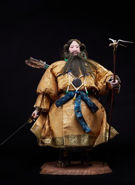

Jinmu Tei là tác phẩm thuộc dòng Gogatsu Ningyō, dòng búp bê truyền thống được trưng bày trong Lễ hội Bé trai (Tango no Sekku) vào ngày 5 tháng 5 hằng năm. Tác phẩm tái hiện hình tượng Thiên hoàng Jinmu (Jimmu Tennō) – vị Thiên hoàng đầu tiên của Nhật Bản theo truyền thống, người được xem là biểu tượng cho sự khởi đầu của Hoàng gia Nhật Bản và tinh thần lập quốc.
Búp bê được tạo hình trong bộ lễ phục cổ truyền với râu dài, tay cầm cung — trên đầu cung có chim kim sí (金鵄, kinshi) màu vàng đậu, theo truyền thuyết đã toả ánh sáng làm quân địch choáng mắt — thể hiện phong thái uy nghi của một vị quân vương. Những chi tiết trên trang phục, vũ khí và khuôn mặt đều được chế tác thủ công tinh xảo, phản ánh trình độ nghệ thuật cao của các nghệ nhân Nhật Bản.
Trong văn hóa Nhật Bản, Thiên hoàng Jinmu tượng trưng cho lòng dũng cảm, trí tuệ, sự lãnh đạo và khát vọng xây dựng đất nước. Hình tượng này thường được lựa chọn cho búp bê Gogatsu Ningyō với mong muốn các bé trai lớn lên khỏe mạnh, có ý chí kiên cường, phẩm chất cao đẹp và tinh thần trách nhiệm đối với cộng đồng. Tác phẩm không chỉ mang giá trị nghệ thuật mà còn góp phần gìn giữ truyền thống và những giá trị văn hóa lâu đời của Nhật Bản.
神武帝は五月人形の作品で、毎年5月5日の端午の節句に飾られる伝統人形です。本作は、伝承上の日本の初代天皇であり、皇室の始まりと建国の精神の象徴とされる神武天皇の姿を再現しています。
人形は長いひげをたくわえた古式の礼装姿で、弓を手にし、その弓の先には金鵄（きんし）がとまり（伝説では、この金色のトビが放つ光が敵軍の目をくらませたとされます）、君主としての威厳ある風格を表しています。衣装、武具、顔の細部に至るまで精巧な手仕事で作られ、日本の職人の高い芸術性を映し出しています。
日本文化において神武天皇は、勇気、知恵、指導力、国づくりへの志の象徴です。この姿は、男の子が健やかに育ち、強い意志と気高い人柄、社会への責任感を身につけるようにとの願いを込めて、五月人形の題材としてよく選ばれてきました。本作は芸術的価値を持つだけでなく、日本の伝統と長く受け継がれてきた文化的価値を今に伝えています。